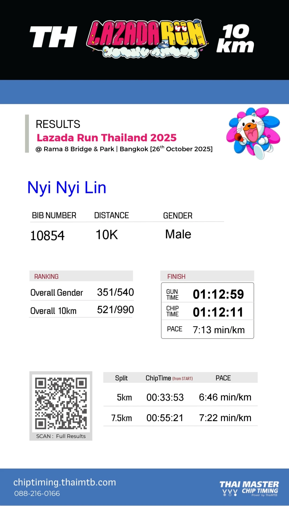
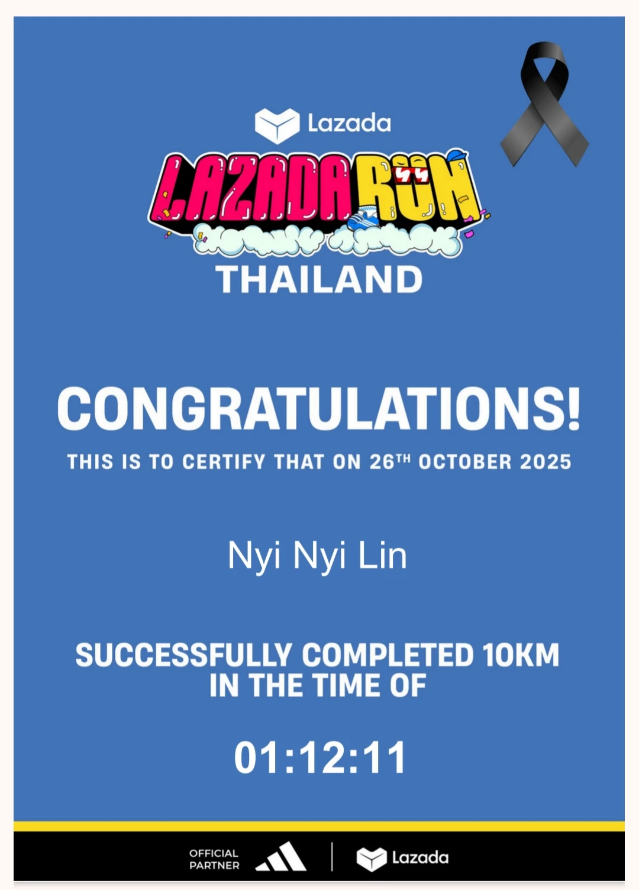
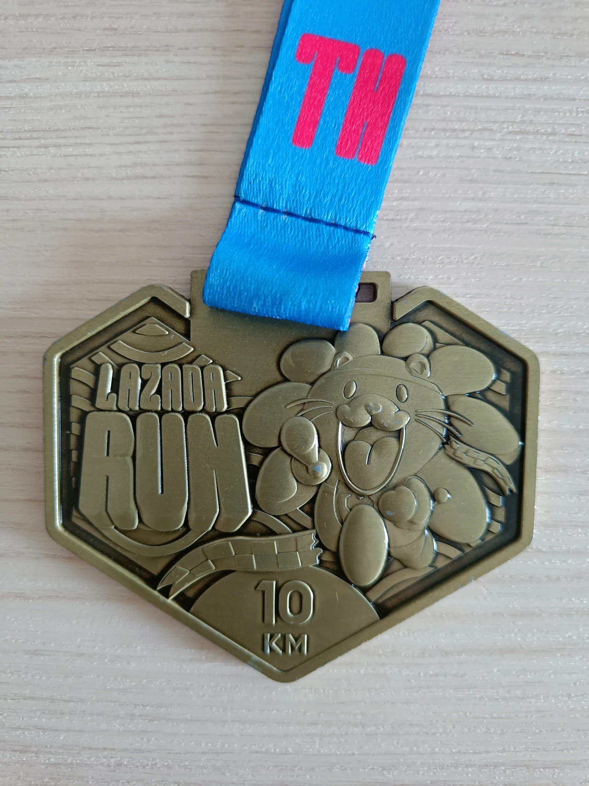
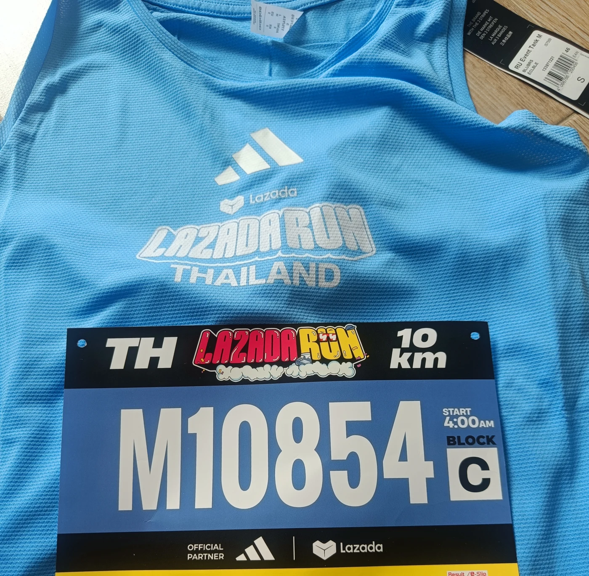

Race 03 · 10K finisher
Lazada
Run.
10KM
Official record
The result.
Race day setup
On the day.
Suan Luang
Rama VIII Park
Open in Google Maps
ASICS
Novablast 5
Responsive trainer · race-day pair
- Gun time
- 1:12:59
- 5K split
- 33:53
- Gender rank
- 351 / 540
Verified finish
Official proof.
The timing record and 10K finisher certificate from Lazada Run Thailand 2025.



What came home
The medal.
A night race beneath Rama VIII Bridge, finished with ten kilometres on the clock and another medal for the tower.
Race 03 / 05Before the start
Race kit.
Event blue from shirt to bib, ready for a 4:00 AM start in block C.
View the race location